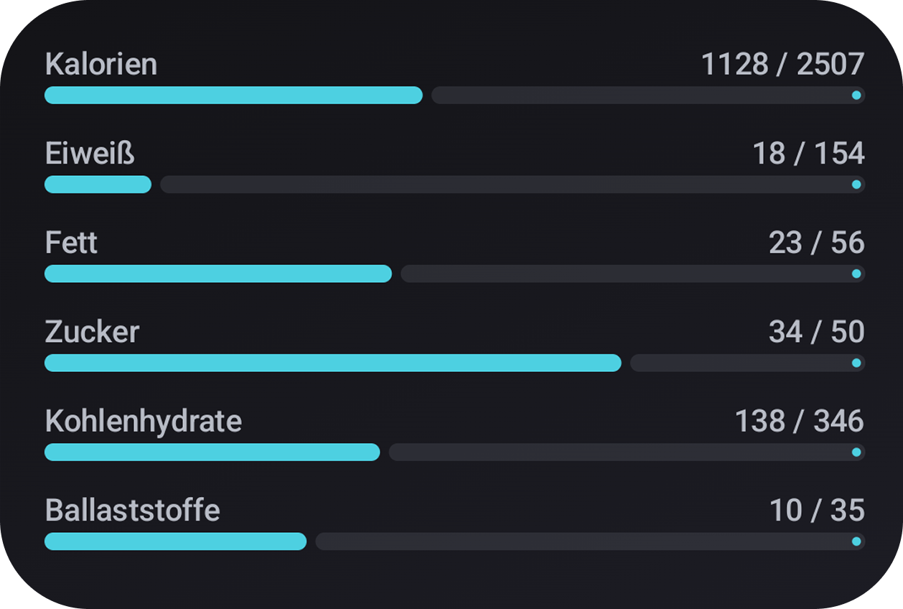
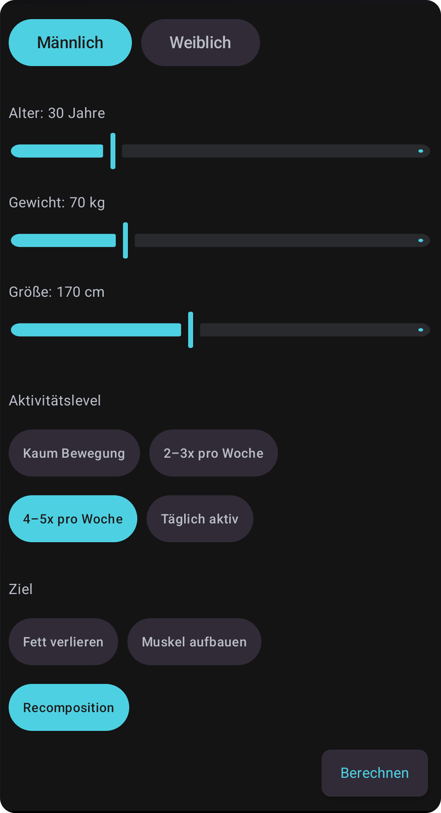
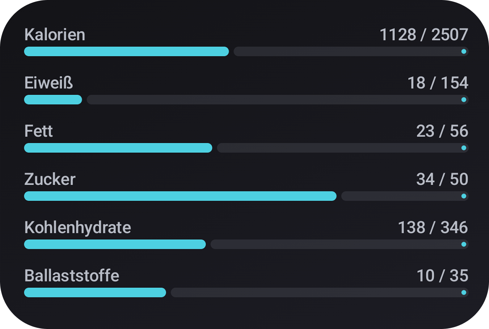
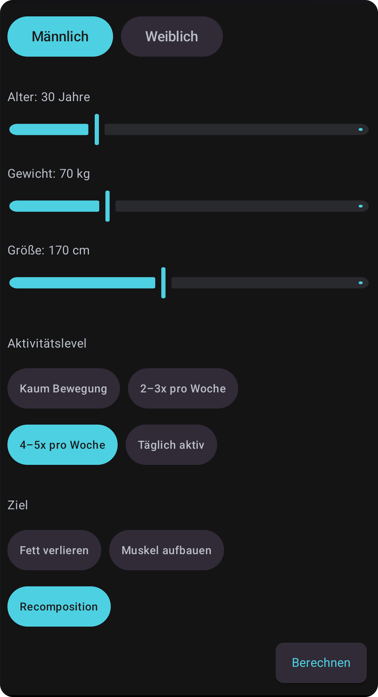

LittleTrack ist eine innovative App, die entwickelt wurde, um Ihnen bei der Organisation und Verfolgung Ihrer täglichen Aufgaben und Projekte zu helfen. Eine klare Benutzeroberfläche sorgt für maximale Produktivität. (Bitte ersetze diesen Text durch deine tatsächliche Beschreibung!)
 



Rkord ermöglicht das einfache Aufzeichnen und Verwalten von Audio-Clips. Ideal für schnelles Notieren von Ideen oder kurzen Interviews. Die Cloud-Synchronisierung hält Ihre Aufnahmen überall verfügbar. (Bitte ersetze diesen Text durch deine tatsächliche Beschreibung!)